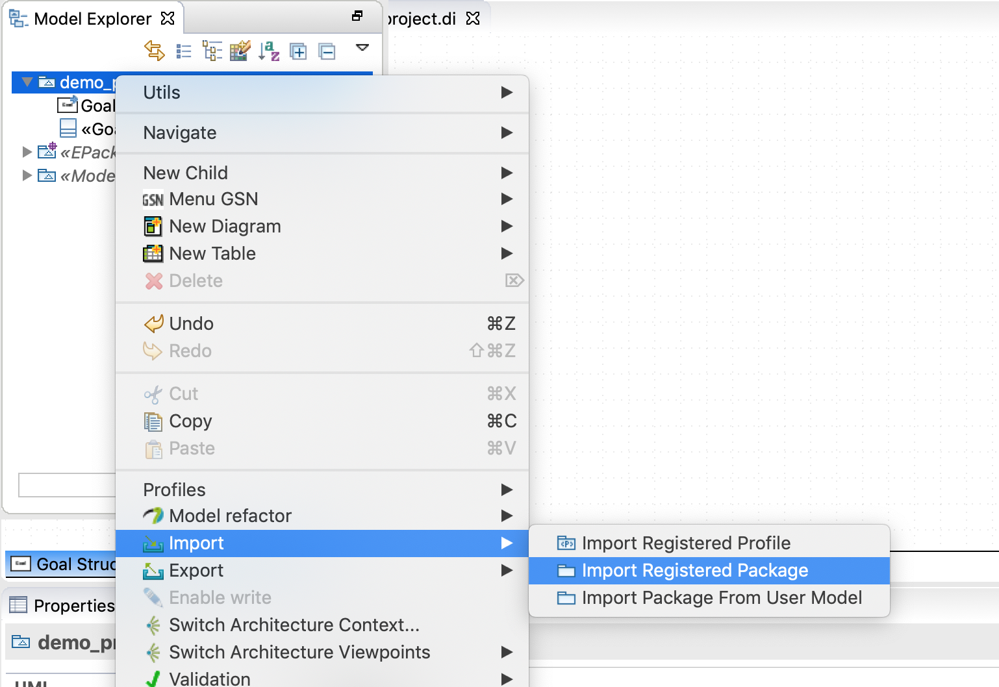
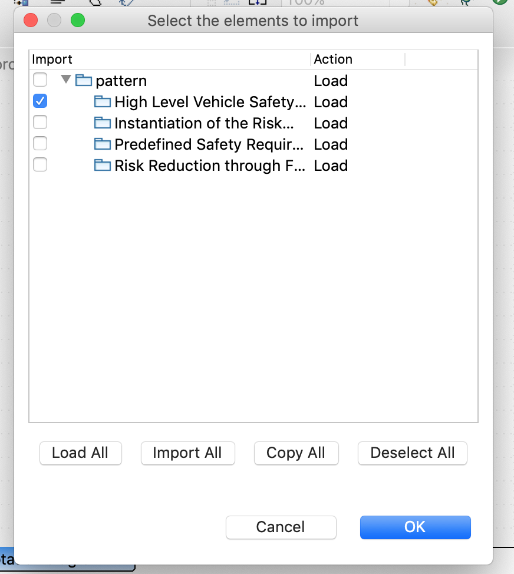
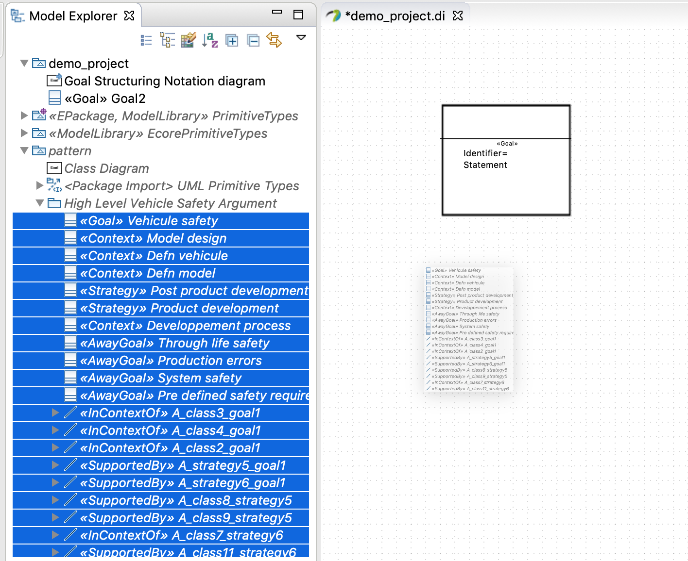
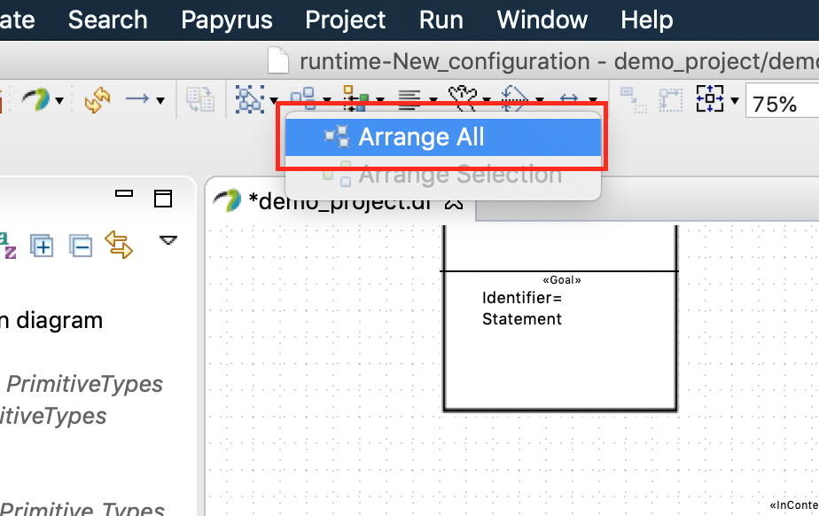

The GSN plug-in includes a library of generic patterns drawn from the literature. These patterns can be imported in your safety argument diagrams.
Patterns can be imported by right-clicking on the root of your model on the "Model Explorer" view, and then selecting the "Imported Registered Package" action from the "Import" menu.
You will then be greeted by a dialog window allowing you to select which pattern(s) you would like to import into your diagram.
You will then be greeted by a dialog window allowing you to select which pattern(s) you would like to import into your project.
In order to import a loaded pattern into your diagram, you have to select all the children of the package named after the loaded pattern in the model explorer, and drag & drop them into you model.
The imported pattern will certainly look untidy. In order to rearrange the nodes, select the "Arrange All" action from the "Arrange Actions" menu of the toolbar.
